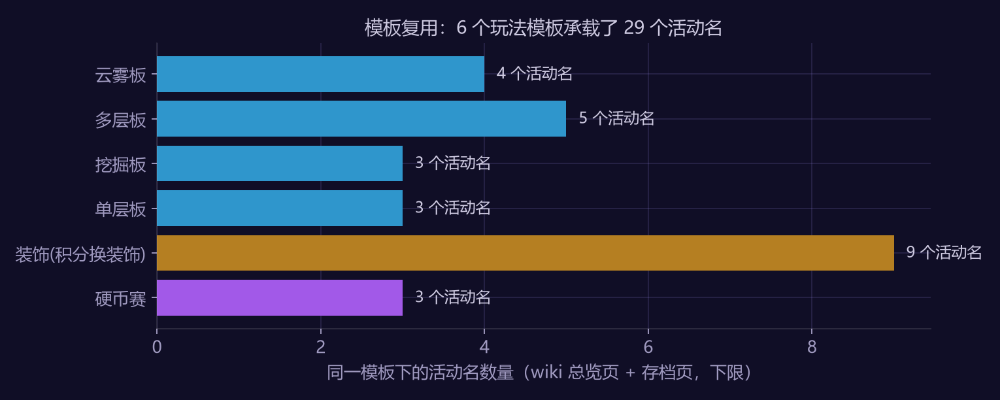
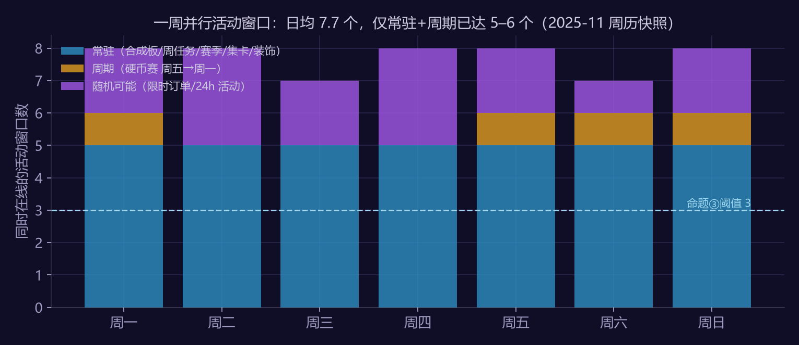
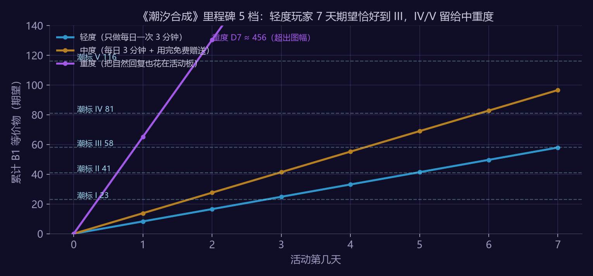

1. 文档信息
| 项 | 内容 |
|---|---|
| 对象 | Gossip Harbor（柠檬微趣，二合一合成类；wiki 原文 "merge two items"）；设计部分为同品类通用方案 |
| 类型 | 活动分析 + 活动策划案（合一） |
| 版本 | v1.1（2026-09，经审核修订：产出链改按订单建模、涨潮价值重新定义、窗口计数分需操作/被动） |
| 作者 | 赵鹏淦（系统 / 活动策划） |
| 数据 | Gossip Harbor fandom wiki 活动总览页、主页活动日历、更新日志与 10 个存档活动页（经 Wayback 镜像）；脚本 analysis/gh_events_scrape.py、gh_event_fatigue.py、gh_tide_event_budget.py |
| 数值口径 | B1 等价物 = 把任意等级的活动棋子折算成 1 级棋子的个数（二合一下 i 级 = 2^(i−1) 个 1 级），定义与《合成游戏生成器经济模型拆解案》相同；本文只借用该案"1 个 B1 ≈ 8.33 体力"的定价参照 |
2. 立意：我为什么弃坑，我就设计什么来接住我
我自己玩 Gossip Harbor 约两个月、付费数百元后停了。停下的原因不是卡关、不是体力，而是活动疲劳，具体三条：
- 活动模板重复——换皮不换玩法；
- 排行榜 / 竞争压力——不付费拿不到奖，每次像被逼氪；
- 每日打卡链太长——上线像在完成清单，不是在玩。
个案不是结论。本文先用公开活动库检验这三条是不是结构性问题（§3），再针对成立的部分设计一个 7 天活动（§4–§8）。原则：不是再加一个活动，而是设计一个能减负的活动节奏。
3. 分析篇：三条疲劳在数据里成不成立
3.1 数据与证据等级
Gossip Harbor 的 wiki 只被 Wayback 存档了约 60 页，37 个总览页活动里只有 3 个有独立页快照。因此活动表（79 个活动）按证据等级分层，正文引用时标明来源：
| 等级 | 活动数 | 来源 |
|---|---|---|
| 有活动页快照 | 10 | 活动页信息框与奖励表 |
| 仅总览页 | 34 | 总览页分类说明 + Tips 页 |
| 仅更新日志 | 35 | 2025-04 至 2025-10 更新日志里出现的活动名（用于计"新名字产出速度"） |
规则性文本直接来自 wiki 原文，例如："同一时间只能有一个合成板活动，一个结束后可以立即开始下一个，或间隔至少 2 小时"；合成板活动的可合成棋子"只来自完成订单，每单给 1 或 2 个 1 级或 2 级棋子"；"其他类活动通常为 24 小时"；硬币赛"周五 10:00 GMT 开始，周一 10:00 结束"。
3.2 命题①：模板复用——成立
| 模板 | 活动名数（下限） |
|---|---|
| 合成板·云雾 | 4 |
| 合成板·多层 | 5 |
| 合成板·挖掘 | 3 |
| 合成板·单层 | 3 |
| 装饰（订单产装饰点 → 按阶段买永久装饰） | 9 |
| 硬币赛 | 3 |

- 明确归类的 15 个合成板活动全部落在 4 个模板里，每个模板平均复用 3.8 次；9 个装饰活动是同一个模板。6 个模板承载了 27 个活动名。
- 更新日志显示 2025-04 到 2025-10 约 6.5 个月出现了 35 个总览页没有的新活动名，每月约 5 个新名字；同期 wiki 分类页新增的玩法子类是 0 个（以 wiki 分类为准，可能低估真实新玩法）。
- 判定：成立。"换皮不换玩法"不是个体感受，是活动生产线的工作方式。
3.3 命题②：竞争压力——部分成立
- 可判定的 36 个活动中，排行榜 / 对手制 7 个（19%）。按数量看竞争活动是少数。
- 但按周历权重看不一样：每周固定一档硬币赛（Beat the Heat Wipeout / Lori's Dough Derby / Ziva's Goldrush 三选一轮换），横跨周五到周一四天。三档中 Beat the Heat 有页面确认为排行榜制，Ziva 仅 Tips 页描述为"与其他玩家赛跑"，Lori 为个人里程碑——至少一档、可能两档是排行榜制，轮换比例未知。
- 奖励头部集中：有页面快照的 2 个竞争活动——Beat the Heat Wipeout（每轮小组前 1/2/3 名有奖）、Tidal Beats Fest（每阶段前三名）——奖励都只发前三；24-Hour Player Competitions 仅有更新日志记录，按名次发奖但档位未知。
- 判定：部分成立。竞争活动数量不多，但曝光时长高（一周四天）、奖励零和；"不付费拿不到奖"对应的是"只有前三名有奖"这个结构。
3.4 命题③：每日窗口数——成立
按 2025-11 主页活动日历 + 各活动时长，把"需要每天操作"的窗口与"被动累积"的窗口分开计：
| 周一 | 周二 | 周三 | 周四 | 周五 | 周六 | 周日 | |
|---|---|---|---|---|---|---|---|
| 需操作·常驻（合成板 / 周任务 / 赛季限时任务） | 3 | 3 | 3 | 3 | 3 | 3 | 3 |
| 需操作·周期（硬币赛 周五→周一） | 1 | 0 | 0 | 0 | 1 | 1 | 1 |
| 需操作·随机可能（限时订单 / 24h 活动） | 2 | 3 | 2 | 3 | 2 | 1 | 2 |
| 需操作合计 | 6 | 6 | 5 | 6 | 6 | 5 | 6 |
| 被动（集卡相册 / 月度装饰） | 2 | 2 | 2 | 2 | 2 | 2 | 2 |

- 需每日操作的窗口日均 5.7 个；只算确定会有的常驻 + 周期也有 3.6 个。命题设的阈值 3 是作者经验值（一天里超过三件"必须做"就开始像清单），不是行业标准。
- 三个常驻窗口里，赛季通行证自带"24 小时限时任务"，周任务清单（Restaurant Goals）本身就是一张清单——清单套清单。
- 判定：成立。
3.5 个案对照
- 我的三条疲劳原因与三个命题的对照：两条成立、一条部分成立。个案与结构一致，但一个人的经历只说明"这种结构存在"，不说明"多数玩家因此流失"。
- 我看数据前的一条直觉："合成板活动 + 24 小时订单赛叠加时最累"。数据只能部分支持：合成板恒有一个，24h 活动"通常"存在但具体频次抓不到。这条标为未验证。
4. 设计篇：三条原则
| 疲劳 | 原则 | 机制 |
|---|---|---|
| 模板重复 | 换玩法不换皮 | 合成板加一条新规则"潮汐"：每日一次涨潮，给棋盘上落单的最低级棋子配对并合成。它改变最优操作序列（留落单棋子等涨潮 vs 立刻处理），而不是改美术 |
| 排行榜压力 | 里程碑替代排行 | 主奖励为个人里程碑 5 档；可选"同投入分组赛"：按活动前 3 天体力消耗把玩家分到 20 人组，组内比进度不比氪金；退出无惩罚、不影响里程碑 |
| 打卡链太长 | 每日一次三分钟闭环 | 一天只有一个必做动作：触发涨潮 + 一次交付。没有编号式领奖、没有子任务清单；错过一天不清进度，只少一次涨潮 |
两件事分开算功劳：本活动是合成板活动，按 wiki 规则它天然替代当期常规合成板活动，这不是本案的设计；本案真正新增的日历规则是——活动运行的 7 天内，不叠加其他 24 小时活动（对命题③的直接回应，也是最可能被运营反对的一条，§9 讨论取舍与验证方式）。
5. 活动规则《潮汐合成》
- 时长：7 天。独立合成板（沿用单层板模板的资产，玩法由潮汐规则改变）。
- 产出链（按 wiki 原文建模）：完成厨房订单 → 每单给 1 或 2 个活动棋子（1 级或 2 级）→ 活动板内二合一 → 合成到 B5 交付里程碑。
- 潮汐：每日 0:00 后首次进入活动板可触发一次涨潮。涨潮找出棋盘上等级最低的落单棋子（没有同级配对者），最多 2 个，各补一个同级"潮汐棋子"并立即合成。它产出的是净增：每次涨潮白得最多 2 个棋子（按最低级为 1 级计，净增 ≥2 个 B1 等价物）。
- 策略空间：涨潮前故意留落单的低级棋子能白得配对，但落单棋子占棋盘格；玩家在"棋盘空间"和"免费棋子"之间做选择——这是新玩法，不是新皮。
- 里程碑 5 档：潮标 I–V，阈值见 §7；每档奖励为主线可用资源（能量 / 宝石碎片 / 一件活动装饰），无稀有卡零和奖励。
- 分组赛（可选）：活动第 3 天结束时按前 3 天体力消耗分 20 人组；第 7 天按里程碑进度排名，前 50% 得一个额外装饰变体（同一装饰的配色版，不是更强的东西）。不参加不损失任何里程碑奖励。防沙袋：奖励价值刻意压低，使"前 3 天少花、后 4 天猛冲"的收益低于代价；若某玩家 D4–D7 日均消耗超过其 D1–D3 均值 3 倍以上，结算时按全程均值重新分组。
- 付费点：只有一个——"再涨一次潮"（当日限一次），定价见 §7。不卖棋子、不卖里程碑跳档。
6. 日程 D1–D7
| 天 | 必做（≤3 分钟） | 可选 | 轻度玩家的期望状态 |
|---|---|---|---|
| D1 | 进入 → 教学一次涨潮 → 交付第一件 | 多玩 | 累计 ≈ 8 |
| D2 | 涨潮 + 交付 | — | ≈ 17 |
| D3 | 涨潮 + 交付 | 报名分组赛 | ≈ 25，到达潮标 I（23） |
| D4 | 涨潮 + 交付 | — | ≈ 33 |
| D5 | 涨潮 + 交付 | — | ≈ 41，到达潮标 II（41） |
| D6 | 涨潮 + 交付 | — | ≈ 50，潮标 III 冲刺提示 |
| D7 | 涨潮 + 交付 → 结算 | 分组赛结算 | ≈ 58，潮标 III（58）约一半人到达 |
7. 数值
假设参数（公开资料无官方值，全部可改，脚本 gh_tide_event_budget.py）：完成一单平均耗 20 体力；每单给 1.5 个活动棋子，60% 为 1 级、40% 为 2 级（wiki 只说"1 或 2 个、1 级或 2 级"）→ 每单 2.1 个 B1 等价物，每体力 0.105 个；每日一次 3 分钟可花 60 体力；每日免费赠送 40；自然回复 720/天；涨潮每日净增按下限 2 个计。
| 画像 | 7 日体力 | 订单产出 | 涨潮净增 | 合计 B1 等价物 | 涨潮占比 |
|---|---|---|---|---|---|
| 轻度（只做每日 3 分钟） | 420 | 44.1 | 14 | 58.1 | 24% |
| 中度（3 分钟 + 用完赠送） | 700 | 73.5 | 14 | 87.5 | 16% |
| 重度（60% 自然回复投入活动） | 3,304 | 346.9 | 14 | 360.9 | 4% |
里程碑按轻度玩家 7 日期望的 40 / 70 / 100 / 140 / 200% 设：
| 档 | 阈值 | 轻度期望到达日 | 轻度达成概率（σ≈4） | 中度 | 重度 |
|---|---|---|---|---|---|
| 潮标 I | 23 | D3 | 100% | ✓ | ✓ |
| 潮标 II | 41 | D5 | 100% | ✓ | ✓ |
| 潮标 III | 58 | D7 | 51% | ✓ | ✓ |
| 潮标 IV | 81 | — | 0% | ✓ | ✓ |
| 潮标 V | 116 | — | 0% | ✗ | ✓ |

- 轻度玩家"只做每日三分钟"恰好到第三档一半概率——这是刻意的：第三档是"我认真玩了七天"的心理终点，达成一半的人会满足，另一半在 D6 收到冲刺提示后多花一次赠送体力即可越线（+40 体力 ≈ +4.2 B1，正好一个 σ）。
- IV 给中度，V 给重度；没有任何一档需要付费才能到。
- 涨潮对轻度玩家的贡献 24%——它必须有分量，否则"换玩法"只是摆设；但它有上限（每日 2 个），对重度玩家只占 4%，不会冲击整体经济。
- 付费点定价：一次额外涨潮 = 当日再净增 ≥2 个 B1 等价物，按 B1 ≈ 8.33 体力折算价值 16.7 体力；定价 25 体力等价（溢价 1.5 倍）。这是一个有上限的小额产出加成，不是便利性售卖——与生成器经济模型案 §4 的结论不冲突：那里说的是"便利性改动不能被当成产出加成来定价"，这里卖的就是产出，且每日只能买一次、上限对 7 日总量的影响 ≤ 24%。宝石标价按产品的宝石↔体力汇率换算，本文不给（未公开）。
8. 埋点与验收
| 指标 | 目标 | 说明 |
|---|---|---|
| D1 / D3 / D7 参与率 | ≥ 60% / ≥ 45% / ≥ 35% | 对比同周期合成板活动的历史均值；D7/D1 留存比是核心指标 |
| 潮标 III 达成率（分层） | 仅做每日闭环的玩家（活动内日均体力 ≤ 80）中 40–55% | 高于 55% 说明阈值偏松，低于 40% 说明 3 分钟闭环没做到；中重度玩家不计入此项 |
| 单日活动内时长中位 | ≤ 4 分钟 | 超过说明"必做"没有压缩住 |
| 分组赛报名率 / 退出率 | 报名 ≥ 30%，退出 ≤ 10% | 退出率高说明"不比氪金"没有被相信 |
| 付费涨潮购买率 | 3–6% 的 DAU | 高于 8% 要检查是否已被当作主要产出来源 |
| 活动后 7 日留存与 ARPDAU（A/B） | 测试桶 ≥ 对照桶 | 见 §9 分桶设计；"同期不参加者"不能当对照组（自选择） |
9. 风险与取舍
- 不叠加其他 24h 活动 → 短期收入下降。验证方式必须是 A/B 分桶：测试桶跑潮汐并屏蔽 24h 活动，对照桶照常；主指标是桶间 7 日留存与 ARPDAU 差。事先定一条可接受的收入回撤上限（示例 −8%）；若留存不涨或回撤超线，本案失败，恢复叠加。估算框架：24h 活动占活动收入的比例 × 一周。
- 涨潮被薅：玩家囤大量落单低级棋子等涨潮。缓解：每日最多补 2 个，且只补"等级最低"的落单者，囤更高级的没用；落单棋子占棋盘格本身是成本。
- 分组赛沙袋：见 §5 防沙袋规则；奖励只是配色变体，动机弱。
- 分组匹配失败（人数不足 / 投入差异大）：回退为纯里程碑，分组赛奖励改为里程碑 IV 的附赠。
- "换玩法"只有一条规则，可能不够新鲜。取舍：每期活动只加一条规则，是为了规则本身可被学会；三期之后再组合。
- 3 分钟闭环与重度玩家的矛盾：重度玩家会觉得没东西可做。里程碑 V 与分组赛是给他们的，但本案明确把轻中度留存放在重度活跃之前。
10. 未做与边界
- 活动时长、并行数、奖励结构的大部分字段来自分类级描述而非逐活动页面（证据等级见 §3.1）；命题①③的结论在"下限"意义上成立。
- 所有体力与产出数值为示例参数；上线前需用产品真实的订单体力消耗、棋子发放与体力配置重跑脚本。
- 作者本人的弃坑经历为一人个案；三命题的验证只说明"结构上存在"，不说明"多数玩家因此流失"。